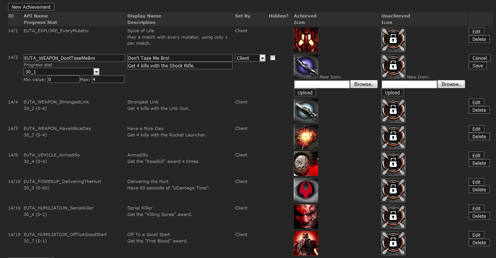

UDN
Search public documentation:
OnlineSubsystemSteamworksCH
English Translation
日本語訳
한국어
Interested in the Unreal Engine?
Visit the Unreal Technology site.
Looking for jobs and company info?
Check out the Epic games site.
Questions about support via UDN?
Contact the UDN Staff
日本語訳
한국어
Interested in the Unreal Engine?
Visit the Unreal Technology site.
Looking for jobs and company info?
Check out the Epic games site.
Questions about support via UDN?
Contact the UDN Staff
在线子系统Steamworks
概述
请参照在线子系统技术指南获得关于在线子系统的一般信息和高层信息。 要想实现类似于成就、排行榜、客户端/服务器 统计数据和其他依赖于Steamworks的功能，那么您的游戏必须有一个Steam appid，您需要访问合作者Steamworks的网站。
集成状态
OnlineSubsystemSteamworks 正在进行常规更改，自从2012年10月开始，下面是可以正常运作的功能的关键列表：
- 成就
- 玩家统计数据
- 玩家排行榜
- 服务器浏览器广告
- 服务器浏览器查询
- 玩家邀请
- IP通话
- 大厅管理/广告/查询
- Steam 套接字（通过 Steam 进行的网络连接，自动 NAT遍历）
- 多人游戏验证
- 客户端验证
- 服务器验证
- 没有 Steam 客户端的主机服务器
- 服务器浏览器过滤还没有优化为使用服务器标记字段，需要服务器查询进行过滤
- 服务器浏览器不支持 NAT 穿越；如果需要 NAT 穿越，那么必须改用 Steam 大厅
- Achievements（成就）/stats（统计数据）/leaderboards（排行榜）都通过 *Engine.ini 进行设置；这样可以防止玩家自行修改 .ini 文件
- 如果从2011年12月份QA版本之前的版本进行更新，那么UE3中的网络兼容性已经被破坏。
- OnlineSubsystemSteamworks 以前在游戏中的实现将需要重新测试，可能还需要进行重构。
- PS3/Mac 支持
如何在虚幻引擎3中使用及实现Steam集成
使用Steam客户端
获取最初的游戏(在设置内容服务器后)
- 获得最新版本的Steam SDK，并把sdk/client/Steam.exe和sdk/client/Steam.cfg复制到本地文件夹。
- 授权用户可以从 '//depot/UnrealEngine3/Development/External/Steamworks/sdk/client/...'中复制它。
- UDK用户可以从这里https://partner.steamgames.com/home注册并下载。
- 请确保'steam.cfg'是可写的，并设置 'SdkContentServerAdrs'为您正在运行您的本地内容服务器的机器的IP地址。
- 运行'Steam.exe'
- 在'My games(我的游戏)'标签面板上右击您游戏并进行安装(我们这里是‘虚幻开发工具包’)。
- 当安装完成后，右击鼠标并‘Launch game(启动游戏)’。
获得更新 (当设置完内容服务器后)
* 只要正在运行着Steam 客户端，那么更新是自动进行搜索获取的。-
- 如果您不想等待查询时间间隔，您可以重新启动Steam 客户端。
注意
- 如果您获得了一个更新，但是本地内容服务器有一个全新的版本(不是迭代的版本)，那么客户端将会感到困惑。要想修复这个问题，那么请删除您本地文件夹中除'Steam.exe'和'Steam.cfg'之外的所有文件，然后重新启动。
- 在初期开发时，这种情况很容易发生。
使用Steam内容工具
有两种方法：使用GUIde和使用Steam脚本。使用GUI创建一个具有解决方案和工程文件的初始版本
- 本地复制您想发布的版本(比如'C:\Builds\UnrealEngine3')。
- 运行内容工具(Steam SDK的一部分)'sdk/tools/ContentTool.exe'。 *点击'New Solution(新建解决方案)'按钮。
- 点击‘Next(下一步)’。
- Solution(解决方案)部分： 在'Solution Name(解决方案名称)'处输入(UTGame)，在 location(位置)处输入 'C:\SteamGame'。
- 点击‘Next(下一步)’。
- Application (应用程序)部分： 在'Application Name(应用程序名称)'中输入('Unreal Development Kit(虚幻开发工具包)' - 这时出现在GUI上的东西)，File Delivery(文件传送方式)是'Loose Files(松散文件)'，'Application ID(应用程序ID)'是13260。
- 点击‘Next(下一步)’。
- Depot(仓库)部分： Name(名称)是 'UTGame'，Type(类型)是'Content(内容)'，'Project Location(项目位置)'是 'C:\SteamGame'，'Depot Location(仓库位置)'是'C:\SteamGame\Depot'，'Depot ID(仓库ID)'是13261。
- 点击‘Next(下一步)’。
- 点击
右侧的列表框项，并输入'C:\Builds\UnrealEngine3'。 - 点击 'Finish(完成)'(它将会列出它找到的要添加到项目中的文件 - 点击OK(确定)来同步depot)。
- 点击GUI左上方附近的'Solution Properties(解决方案属性)'按钮；它就在 'Solution Explorer(解决方案浏览器)'文本的下方。
- 展开树形结构‘Launch Options(启动选项) -> Label(标签) = Default(默认) -> Command line(命令行命令) = Unreal Development Kit’
- 右击鼠标，并把命令行改为'Binaries\Win32\UDKGame.exe'。
- 关闭那个窗口，当提示时选择保存。
- 点击'Build(编译)'工具条按钮(这将花费一些时间)。
- 'C:\SteamGame\Depot'现在包含了 '13261_0.dat'、'13261_0.blob'和'UTGame.depot'(这是appid_version.dat和appid_version.blob)。
- 从Publish(发布)菜单中选择'Publish to Local Testing Server(发布到本地测试服务器)'，这将会复制'13261_0.dat'、'13261_0.blob' 和'ContentDescriptionDB.xml'到本地服务器中。
- 运行内容浏览器
使用Steam脚本创建新版本
- 产生一个DOS框
- 运行'//depot/UnrealEngine3/Development/External/Steamworks/sdk/tools/ContentTool.com' /verbose /console /filename '//depot/UnrealEngine3/UDKGame/Build/Steam/SteamMakeVersion.smd'
- 从'C:\SteamGame\Depot' to 'C:\Steam\DepotRoot'复制新的文件。
- 把'C:\SteamGame\ContentDescriptionDB.xml'复制到'C:\Steam\DepotRoot'中。
- 停止并重新启动内容服务器，以便它可以检测更新。
注意
- 更新过程是自动在版本系统中完成的；请检查//depot/UnrealEngine3/Development/Builder/Scripts/Build/SteamVersion.build获得详细信息。
- 当编辑 .sts和.spj文件时一定要非常小心，因为无意的修改可能会导致一些问题。同时，请不要改变相对路径；这样做也会导致一些问题。
运行Steam内容服务器
有两种方法来运行内容服务器：从命令行提示符运行或者将其作为服务。从命令行提示符运行内容服务器
- 产生一个DOS框
- 运行'//depot/UnrealEngine3/Development/External/Steamworks/sdk/tools/contentserver/contentserver.exe' /verbose /DepotPath 'C:\SteamGame\LocalTestServer'。
- 您将会看到很多调试信息，但是最后您会看到13261_0提示。
- Steam客户端现在可以连接并下载该版本了。
作为服务运行内容服务器
- 把'C:\SteamGame\LocalTestServer' 移动到'C:\Steam\DepotRoot'(除非你正在使用ContentServerCfg.txt来设置该服务的depot路径；请参照下文)
- 产生一个DOS框
- 运行'//depot/UnrealEngine3/Development/External/Steamworks/sdk/tools/contentserver/contentserver.exe' /install (这将自动地启动服务)。
- Steam客户端现在可以连接并下载该版本了。
注意
- 内容服务器通常可以工作的很好，并且可以无缝地处理大量的典型的网络问题。
- 下面有两个明显的例外情况：
- 内容服务器不能检测新的版本，要想注册新的版本您需要重新启动服务。
- 当作为服务运行时，depot的位置不能从命令行开关进行设置。当作为服务运行时，depot的位置仅能通过和ContentServer.exe位于同一目录的ContentServerCfg.txt文件进行设置。否则，将使用\Steam\DepotRoot的默认值(路径是相对于根目录的路径)。这个文件的语法和UE3 .ini文件类似；比如，要想将库的位置从"\Steam\DepotRoot"改为 "\LocalContentServer"，ContentServerCfg.txt将需要包含以下两行语句：
[ClientContent] DepotRootPath = "\LocalContentServer"
在游戏中使用Steam
当启动游戏时，简单地运行Steam客户端可以使您访问所有的Steam功能。如果Steam客户端没有运行，那么网络层将会在内部退回到普通的在线子系统(它基本具有了OnlineSubsystemPC的功能)。 验证系统非常的简单，如果您没有'拥有'那个游戏，那么您不能再服务器上玩这个游戏。请向Valve获取您自己的应用程序id来测试您的游戏的网络连接性；任何人都可以拥有 'Unreal Development Kit' 应用程序id。统计数据
后端设置
 要设置统计数据，您首先需要在Steamworks后端上定义它们；该后端可以通过Steamworks合作者网站的Game Admin(游戏管理)面板访问。
统计数据项API Name 必须 遵循 'ViewId_ColumnId' (比如，2_0)，这里的ViewId将用于作为标识特定统计数据表格的唯一编号，ColumnId用于标识统计数据表格中的每项统计数据。
'Type(类型)' 可以是 INT/FLOAT(没有测试/不支持 AVGRATE )，统计数据项可以通过客户端或游戏服务器进行设置，但是 不能同时两者上设置 。
要设置统计数据，您首先需要在Steamworks后端上定义它们；该后端可以通过Steamworks合作者网站的Game Admin(游戏管理)面板访问。
统计数据项API Name 必须 遵循 'ViewId_ColumnId' (比如，2_0)，这里的ViewId将用于作为标识特定统计数据表格的唯一编号，ColumnId用于标识统计数据表格中的每项统计数据。
'Type(类型)' 可以是 INT/FLOAT(没有测试/不支持 AVGRATE )，统计数据项可以通过客户端或游戏服务器进行设置，但是 不能同时两者上设置 。
游戏性集成
统计数据通过使用 OnlineStatsRead 和 OnlineStatsWrite 类进行管理，这两个类定义了统计数据表格的布局，并且它们用作为 读/写 统计数据的容器。OnlineStatsRead/OnlineStatsWrite设置
要想在 OnlineStatsRead 子类中设置统计数据表格，那么您需要设置它的 ViewId 和后端统计数据表格的 ViewId 相匹配，并且把表格的每个统计数据项的 ColumnId 设置到 ColumnId 数组中。 对于OnlineStatsWrite子类，统计数据表格 ViewId 应该添加到 ViewIds 数组中， Properties 数组必须具有针对每个统计数据项的ColumnId设置的元素，使得Data（数���）和后端统计数据类型相匹配，比如：
class YourOnlineStatsWrite extends OnlineStatsWrite
defaultproperties
{
Properties.Add((PropertyId=2,Data=(Type=SDT_Int32,Value1=0)))
}
读取统计数
要想获得统计数据表格的值，需要使用 AddReadOnlineStatsCompleteDelegate() 创建一个函数调用，然后调用 ReadOnlineStats() ，传入您想读取其统计数据的玩家的 UniqueIds 和您的OnlineStatsRead子类的实例。 一旦函数调用返回，那么所有的玩家统计数据都会被读入到OnlineStatsRead对象中，您需要调用 ClearReadOnlineStatsCompleteDelegate() 来清除调用栈。写出统计数据
要写出玩家的统计数据，需要创建一个您的OnlineStatsWrite子类的实例，并使用类似于 SetIntStat() 的函数来设置统计数据的值(请参照OnlineStatsWrite.uc)；然后使用 WriteOnlineStats() 来缓存统计数据，然后使用 FlushOnlineStats() 把数据提交到后端中。 如果您想在提交完成(或则失败)时接收调用栈，那么可以使用 AddFlushOnlineStatsCompleteDelegate() 和 ClearFlushOnlineStatsCompleteDelegate() 来 设置/清除 调用栈。游戏服务器统计数据
游戏服务器统计数据，这些是只有游戏服务器可以写的玩家统计数据，必须使用 Engine.ini 中的 *GameServerStatsMappings 数组进行设置；它会将 OnlineStatsWrite ViewId 映射为游戏服务器统计数据。 在后端，必须将统计数据值的 Set By（设置方式） 字段设置为 GS 进行正常工作。调试/开发
要想重置统计数据，请使用 ResetStats() 函数。成就
后端设置

要设置成就，您首先需要把它们输入到Steamworks 后端；该后端可以通过Steamworks合作者网站的Game Admin(游戏管理)面板访问。 至少，成就 必须 有它们自己的图标集，并且必须由客户端进行设置；需要给它们设置唯一的API名称(推荐)，或者您可以这样顺序地命名它们为‘Achievement_#’，这里的#是从0开始的数值。成就统计数据
最好创建一些成就统计数据项，以便跟踪进步过程；这些统计数据将通过Online Subsystem进行更新。 统计数据必须是INT类型，并且它们的API名称 必须 遵循 'ViewId_ColumnId' 命名规范( 请参照上面的统计数据部分) ，这里ColumnId将会直接映射到AchievementId上(正如在下面的 在线子系统部分 所描述的)。 您可以在后端成就页面上把这些统计数据链接到成就上；设置Min和Max 值来说明解锁成就所需要的进步程度。在线子系统设置
成就通过OnlineSubsytemSteamworks.uc中的 AchievementMappings 数组链接到Steam后端，该数组通过DefaultEngine.ini或DefaultEngineUDK.ini进行配置。游戏性集成
有两种处理成就的方法，一种是通过在线子系统函数手动地处理它们，另一种是让它们通过成就统计数据更新自动地处理(推荐， 请参照 '自动化 处理进度/解锁' 和 ’跟踪处理进度‘ 部分)。手动 处理/解锁
要想解锁成就，您可以使用UnlockAchievement()函数， 'AchievementId' 映射到AchievementMappings数组中为该id指定的成就API名称上。 如果没有设置AchievementMappings，那么UnlockAchievement()假设API Name是： Achievement_#，这里#将会被替换为AchievementId。 要想获得成就解锁 成功/失败的通知，那么在调用UnlockAchievement _之前_，请使用 AddUnlockAchievementCompleteDelegate 来设置通知回调函数，并使用 ClearUnlockAchievementCompleteDelegate 清除调用栈。 这也应用于自动化的成就解锁，但是还没有进行测试。 要想显示成就处理进度，请调用 DisplayAchievementProgress() 函数。AchievementId参数所遵循的规则和UnlockAchievement()时一样。自动 处理/解锁
如果您想让在线子系统自动地解锁成就或者自动地显示成就处理进度，那么您 必须 把统计数据链接到后端的成就上，并且 必须 设置AchievementMappings中的'ViewId'和'MaxProgress'值。 在'AchievementMappings'中， 'ViewId'应该和后端上的成就统计数据的ViewId相匹配，'MaxProgress'指出了成就应该何时解锁，'ProgressCount' 决定了在显示进度更新前所需要的进步量， 'bAutoUnlock'控制是否自动解锁。跟踪处理进度
如果您把成就链接到了Steam后台上的统计数据上，那么您可以使用统计数据系统来跟踪成就的处理进度，同时可选择自动解锁及显示成就处理进度。 请参照上面的统计数据部分获得关于如何设置及使用统计数据系统的信息；ColumnId 应该和成就统计数据的AchievementId相匹配。 如果您启用了自动 成就 处理/解锁 功能，那么这些将通过使用输入的成就统计数据由'FlushOnlineStats'进行触发。调试/开发
要想重置成就，请使用 ResetStats 函数，传入True来重置成就。但是 _这将不会同时重置统计数据和成就_。排行榜
后端设置
排行榜可以通过Steamworks合作伙伴网站上的Game Admin(游戏管理)面板进行设置，或者您可以通过 CreateLeaderboard() 函数进行设置(这个函数不应该在发布代码中使用，仅能用于开发)。 指定的排行榜名称应该是显示在Steam排行榜页面上的可读性较强的排行榜名称，目前这是通过Valve硬编码的并且没有本地化。 自从 2011 年 12 月开始，不再将排行榜链接到终端的统计数据上，所以下面的语句只适用于 12 月之前的代码。 您 必须 至少为每个排行榜设置一个统计数据项（具有唯一的 ViewId ），API 名称遵循 ViewId_ColumnId 命名规则。 排行榜的统计数据项必须是INT类型，并且必须由客户端设置；位于该同一 表格/视图 中的其他统计数据项不必都是INT型。在线子系统设置
排行榜通过 LeaderboardNameMappings 数组链接到后端。 LeaderboardName 用于标识排行榜，并且它应该和后端上的易读的排行榜名称一致； ViewId 将排行榜映射到特定的统计数据表格上。游戏性集成
请参照上面的统计数据部分获得关于如何设置和使用统计数据系统的信息。 排行榜是通过统计数据系统进行读写的，并且仅能由客户端读取。OnlineStatsReadhe和OnlineStatsWrite子类的设置和正常一样，但是它的列必须选作为某个排行榜分数。 在OnlineStatsWrite子类中， RatingId 用于标识排行榜分数所使用的 ColumnId ；OnlineStatsRead子类不需要设置其他额外的信息。读取
要想读取排行榜数据，请使用 ReadOnlineStatsByRank() 和 ReadOnlineStatsByRankAroundPlayer() 而不是'ReadOnlineStats()'；可以从OnlineStatsRead对象中的 Rows 数组中获得每个玩家的 等级/名���/UniqueId；而排行榜的列栏中包含了玩家的分数。书写
要想读取记分牌数据，可以正常地使用 WriteOnlineStats() 和 FlushOnlineStats() 函数，并且它将根据选中的记分板列栏更新记分板分数。额外功能
排行榜信息
要想获得关于排行榜的其他信息（ SortType 、 DisplayFormat 和 LeaderboardSize*），在至少执行一次排行榜 读/写后，您可以访问 *LeaderboardList 数组。 LeaderboardSize 在每次读取或写入排行榜时都会更新。强制更新
默认情况下，当写出排行榜分数时，将会保留分数最高的值；如果当前的排行榜分数是10而您尝试将分数设置为5，那么将会失败。 您可以通过在'LeaderboardList'中设置排行榜的UT_Force为'UpdateType'来强制它更新排行榜分数；如果该排行榜没有位于'LeaderboardList'中，那么就可以添加一项， 仅 需指出'LeaderboardName'和'UpdateType'。服务器广告/查询
在为服务器做广告的时候，请确保在 Game.ini 中的 *[Engine.GameReplicationInfo] 下方设置 ServerName ，否则代码会回复到一个默认的服务器名称。
在线广告/查询
要在Valve主机服务器上宣传游戏服务器，您需要联系Valve，这样他们才能够为您的游戏appid启用这项功能，与此同时他们会为您的游戏提供一个独一无二的 ProductName 密钥。
ProductName
ProductName 值只供 Steam 内部使用，为您的游戏宣传游戏服务器，而对于具有源代码访问权的授权用户，他应该放置在 OnlineSubsystemSteamworks.h 定义的 STEAM_PRODUCT_NAME 中。 对那些专门使用 UDK 的授权用户，也就是具有唯一的 appid 的用户，ProductName 应该放置在位于 [OnlineSubsystemSteamworks.OnlineSubsystemSteamworks] 下面的 DefaultEngineUDK.ini 中，如下所示：ProductName=unrealdk
GameDir
要为您的游戏设置的另一个重要的值是 Engine.ini 中的 *GameDir ；应该为它赋予一个对于您的游戏独一无二的值，并且它是重要的，因为它是用于在Valve主机服务器上过滤您的游戏的值。 如果您没有指定一个对于您的游戏来说是独一无二的GameDir值，那么服务器浏览器查询将会检查所有服务器，在Valve主机服务器上的 每个游戏中 。通过UDK进行宣传
不具有唯一appid的UDK开发人员可以通过UDK本身宣传他们的服务器；在这里唯一要做的重要操作是设置对于您的项目来说唯一的GameDir值，这样在服务器浏览器查询中不会返回其他UDK专用项目中的服务器。 只有非商业性的UDK开发人员可以通过UDK本身进行宣传；商业性开发人员必须联系Valve并获得唯一的appid和ProductName。LAN 广告/查询
| 平台 | 蒙板 |
|---|---|
| Windows | 0x00000001 |
| Windows dedicated server | 0x00000002 |
| Xbox360 | 0x00000004 |
| PS3 | 0x00000008 |
| Linux | 0x00000010 |
| MacOSx | 0x00000020 |
Steam大厅
默认情况下，大厅系统是关闭的，可以在OnlineSubsystemSteamworks\Globals.uci中启用它（需要UScript和C++重编译才能打开） 请参照OnlineLobbyInterfaceSteamworks.uc\UOnlineLobbyInterfaceSteamworks.cpp文件获得实现细节。 当您修改globals.uci，也要打开及保存一个.uc文件，因为有个make命令行开关缺陷，即不能检查.uci文件来查看是否需要重新编译。
多玩家验证
Steam可以支持多玩家验证，进行验证客户端和服务器SteamId，验证一个客户端是否具有这个游戏的所有权，而不是VAC禁止的，并且还没有在其他服务器上进行验证。 它是通过一个通用的在线子系统界面进行控制的，即 OnlineAuthInterface ，其中在 AccessControl 中（用于控制客户端到服务器的验证和加入许可）和在 LocalPlayer 中（用于服务器验证的客户端处理）实现了通用验证逻辑规则。 在 *Game.ini 中会为配置显示，在[Engine.AccessControl]下面，具有下面的配置设置：
- bAuthenticateClients - 游戏服务器是否应该验证连接客户端（阻止客户端在PreLogin加入，直到验证结束，或者在验证失败后将其踢出）
- bAuthenticateServer - 客户端是否应该验证这个游戏服务器（在客户端验证结束之后进行）
- bAuthenticateListenHost -玩家的监听服务器是否应该使用他们自己的服务器进行验证
- MaxAuthRetryCount - 玩家重新尝试验证的最多次数
- AuthRetryDelay - 重新尝试验证的延迟
验证及数据统计
对于在后端设置为 GS （例如，GameServer）的统计数据项，其中只有游戏服务器可以为玩家写这些统计数据，玩家必须在服务器上进行验证，否则无法为该玩家写入GS统计数据。Steam套接字
Steamwork提供了可以自动处理NAT遍历的网络界面，它允许您根据SteamId连接到服务器。 这个过程可以通过OnlineSubsystemSteamworks实现，以自定义网盘的形式；要想启用它，请打开DefaultEngine.ini，然后在 [Engine.Engine] 下做如下更改：
NetworkDevice=IpDrv.TcpNetDriver
NetworkDevice=OnlineSubsystemSteamworks.IpNetDriverSteamworks
启动服务器
在设置了Steam套接字网络驱动器后，为了启用Steam套接字，必须在命令行开关中使用 ?steamsockets 启动服务器。如果没有在命令行中输入这个命令，那么会使用常规的IP连接。 每次通过Steam套接字启动服务器的时候，它都会生成一个新的SteamId，它会被记录在服务器日志文件中，而且可以通过 OnlineAuthInterface.GetServerUniqueId 在UnrealScript中进行检索。 这是连接服务器必须使用的UID，但是，任何尝试通过常规IP连接到服务器的客户端都会被自动定向到服务器SteamId地址。 当一个服务器通过Steam套接字启动后，它还会在服务器浏览器中为广播声明服务器SteamId ，关键字是 SteamServerId 。 要想在UScript中访问它，则必须给OnlineGameSettings子类提供一个具有相同名称的数据绑定变量，请参阅UTGameSettingsCommon了解一个示例。连接到服务器
要想使用Steam套接字连接到服务器，客户端必须在连接URL中指定服务器SteamId；SteamId URL 指定形式为 Steam.# ，其中 # 是SteamId，例如，Steam.90083795756409860。 例如，连接到服务器的控制台命令为： open steam.90083795756409860 尝试连接到服务器常规IP的客户端将会被服务器重定向到服务器SteamId地址（前提是常规IP没有出现NAT问题）。强制使用Steam套接字
邀请
OnlineSubsystemSteamworks针对执行在Steam客户端及游戏内发送的邀请、‘加入朋友’功能、及Steam客户端界面中可以触发的其他服务器加入功能、包括这些启动游戏的功能（所有这些在这部分统一标注为‘邀请’）提供了完整的支持。 所有这些都在在线子系统邀请代码中进行处理，无论其是否通过邀请而触发的动作。
发送邀请
发送邀请有两种主要的方式，通过 Steam 用户界面 (一般，在好友列表上右击好友并邀请他们)和通过在线子系统中的 SendGameInviteToFriend 。 推荐使用SendGameInviteToFriend这种方式，因为这种方式能更好地和Steam套接字兼容，但是两种方式都能正常工作。加入好友或服务器
当您尝试通过Steam用户界面加入好友或服务器时(无论是通过好友列表或者Steam社区等)，这都会像通过Steam用户界面触发的其他邀请一样进行处理。处理邀请
当UE3接收到一个邀请时，它自动地启动一个内部的服务器浏览器搜索来查找邀请所针对的服务器(这是可以正常工作的，只要服务器列在主服务器上，即时不能直接搜索到该服务器也可以)。 一旦这个搜索返回结果，将会通过在线子系统中的 OnGameInviteAccepted 代理传递该结果；一旦触发了该代理，它将被传入到包含邀请信息的服务器搜索结果中，并且为了接受邀请则必须调用 AcceptGameInvite 。 AcceptGameInvite将会自动调用JoinOnlineGame，JoinOnlineGame将会触发 OnJoinOnlineGameComplete 代理；此时，您应该可以加入服务器了，服务器的URL由 GetResolvedConnectString 函数指定(使用该函数来获得加入URL是很重要的，因为它将自动地辨别是使用Steam套接字地址还是使用常规的IP地址)。 PlayerController.uc中的基本引擎代码已经正确地处理了所有这些功能，并且可以将其作为参考引用。启动邀请
因为可以通过Steam客户端来触发邀请和服务器加入功能，所以当游戏没有打开时，Steam可以自动地启动游戏来处理这些邀请。 由于这个原因，所以在启动时立即关联OnGameInviteAccepted是很重要的(再次说明，PlayerController.uc中的基础引擎代码已经处理了该功能)，以便邀请不会丢失。 要想在不能从Steam中启动的开发版本中测试该功能，您可以在命令行中指定如下信息： -SteamConnectIP=127.0.0.1:7777 (要想使其正常工作，你必须指定服务器公共IP)。Steam套接字
邀请代码和steam套接字是紧密关联的，因为有好几种不同的邀请，并不是所有这些类型的邀请都支持steam套接字，因此它们并不是完全地支持100%的NAT traversal(由于Steam提供的信息的限制)。 通过Steam用户界面触发的邀请一般不具备足够的信息来通过Steam套接字加入邀请，但是如果在指定服务器上有一个好友则可以获得该信息；如果在那个服务器上没有好友，那么这些邀请将尝试通过IP连接。 通过 SendGameInviteToFriend 触发的邀请应该总是有足够的信息连接到steam套接字服务器。强制使用Steam套接字
自动启动Steam
如果您需要确保Steam客户端在您启动您的游戏的时候处于运行状态，那么您可以将这个游戏配置为可以检测出Steam没有运行的时候，并且自动启动Steam客户端（在这个过程中关闭游戏，然后Steam会重新启动游戏）。 要进行这些设置，请编辑*Engine.ini，并且在[OnlineSubsystemSteamworks.OnlineSubsystemSteamworks]下，将 bRelaunchInSteam 设置为true， RelaunchAppId 设置为您的游戏appid；然后您必须将steam_appid.txt从Binaries中的Win32/Win64文件夹中删除。 必须将您的游戏安装在Steam文件夹内这一点也非常重要（通常是Steam\SteamApps\common\YourGame\），否则将无法正常工作。 当您在Steam外部启动游戏的时候，游戏将会被关闭，然后由Steam重新启动（如果需要可以自动开启Steam客户端）。
调试
当您的Steam子系统出现问题的时候，首先要做的事情通常是在 [Core.System] 下删除 *Engine.ini中的 Suppress=DevOnline 。这样做可以大大增加与在线子系统相关的日志信息输出的数量（还可以选择在控制台中输入 unsuppress devonline ）。 对于可能在Steamworks API自身出现的问题，您应该向游戏命令行添加 -debug_steamapi ，而且它会将错误信息从Steam SDK输出到日志文件中。将 -console 添加到 Steam client 命令行也会有帮助，因为它可以向Steam添加 'Console' 选项卡，这个选项卡可以提供一些调试输出。
Steam插槽
在调试Steam插槽的时候，除了上述好处外，它还有助于解压缩Engine.ini中的 DevNet 以及DevOnline，由于在网络通道层跟踪问题非常苦难，您可以解压缩 DevNetTraffic ，然后在 UnBuild.h 中，将 SUPPORT_SUPPRESSED_LOGGING 强制为1（会警告这样做将会在日志文件中生成大量垃圾信息）。 另外，如果您想使用Steam套接字调试内部Steam问题，比如连接困难，接收超时等，您可以在命令行中给Steam.exe本身添加 -lognetapi*， *同时在游戏命令行中也进行添加 (这是必要的，以便主机记录日志信息), 然后您可以在 Steam\logs\netapi_log.txt 中看到关于活动套接字的详细调试信息。服务器浏览器：
当调试服务器浏览器时(通常当服务器没有显示时)，您应该查找引用 ServerListResponse 和 ServerRulesResponse 的日志项。 ServerListResponse是通过Valve主服务器的查询结果，无论怎样该主服务器都会返回结果；ServerRulesResponse是通过独立服务器的查询结果，如果有 NAT、端口传送或其他网络问题 ，该查询可能失败。 如果您看到您的服务器IP列在了任何ServerListResponse项中，那么该服务器就成功地位于Valve主服务器上。 然而，如果你的服务器IP列在了任何查询失败信息中，那么很可能是出现了某个和端口传送相关的 路由器/防火墙 配置错误(在服务器上)或者是和UE3不相关的其他一般网络问题；这样的错误配置将使得不能进行ServerRulesResponse 查询。 如果您看到您的服务器地址列在了任何ServerRulesResponse项(没有失败)中，那么很可能不是网络问题，而是和您正在广播的数据相关的问题、引擎版本不匹配问题、或者UE3中产生的其他问题(这时应该日志输出导致问题的详细原因。) 要注意的ServerListResponse日志项：DevOnline: ServerListResponse: Got server details (index: x) ... DevOnline: Querying rules data for Internet server x.x.x.x:xxxx
DevOnline: ServerListResponse: Server 'x' failed to respond DevOnline: ServerListResponse: Server 'x' Address: x.x.x.x:xxxx
DevOnline: ServerRulesResponse: Retrieved server rule: x=y
DevOnline: This server is for a different engine version (x), rejecting.
DevOnline: ServerRulesResponse: Rules response failed for server; IP: x.x.x.x:xxxx, UID: x
罕见问题
常见问题
Steam子系统中会出现的一些问题。
没有更新的统计数据
统计数据书写失败的常见起因游戏服务器统计数据
如果您正在为玩家写游戏服务器统计数据，那么您必须确保客户端在服务器上正确验证；默认情况下，如果玩家验证失败，引擎会阻止玩家加入服务器，如AccessControl.uc中控制的那样。 GameServerStatsMappings （如统计数据部分所述）同时必须进行正确设置，才能使与欧系识别哪些统计数据应该作为游戏服务器统计数据写入。 此外，您必须确保服务器已经正确地设置了它的在线会话，它可以由是否在主机服务器上列出来确定。排行榜被破坏
2011年12月份的Steam更新大大地修改了排行榜存储数据的方式，破坏了和之前排行榜实现的二进制兼容性。服务器没有在主服务器上显示
服务器无法显示在服务器浏览器上的常见原因。ProductName及GameDir
如上面的Server（服务器）广告/咨询部分所述，您必须为您的游戏设置一个有效的 ProductName 和 GameDir 值，使服务器可以显示在主机服务器上并可以进行查询。AppId
你必须确保您在 Binaries/Win32目录中具有有效的 steam_appid.txt 文件，该文件中正确地列出了您的游戏AppId。端口传递及缺少NAT遍历
Steam不支持服务器浏览器的NAT遍历，所以如果您设置具有一台服务器，那么您需要确保针对 游戏/查询 以及Steam本身的端口是打开的；更多信息： https://support.steampowered.com/kb_article.php?ref=8571-GLVN-8711没有Steam客户端的专用服务器
如果您是在没有运行Steam客户端的情况下运行专用服务器，那么您必须确保文件steamclient.dll、tier0_.dll、vstdlib_s.dll和steam.dll都在Binaries\Win32文件夹中。通过同一个IP的服务器设置及查询
在服务器浏览器的 'Internet(网络)' 标签中，某些错误的路由器或防火墙配置会阻止您查找本地设置的服务器；当尝试向您自己的 外部/公共 Ip发送一个包时会出现这种现象。路由器问题
有些授权用户会遇到路由器相关问题，看上去路由器配置正确，但却有妨碍服务器广告正常工作的错误。目前还不知道哪些路由器有问题，所以推荐您使用您自己的特定路由器搜索已知问题(当一切看上去配置正确但其它部分都不能正常工作时)。 '调试'部分的 罕见问题中的使用Wireshark 进行调试的相关信息可以辅助您确定是否是您的路由器有问题(尽管这个调试过程是很复杂的)。Steam客户端问题
Steam客户端问题可能会导致很多问题，包括和服务器浏览器相关的问题；该文章提供了关于这方面的一些信息：[[https://support.steampowered.com/kb_article.php?ref=9828-SFLZ-9289][Programs Which May interfere with Steam][和Steam相干扰的程序]] 也有一些已经报的和 MasterServer2.vdf及Steam本身(尤其是和服务器浏览器)相关的问题，这里的一些解决方案可能对某些人有效：
https://support.steampowered.com/kb_article.php?ref=1452-HCVB-6984&l=english 另一种跟踪Steam问题的方法是备份然后删除 ClientRegistry.blob ，然后重新启动Steam看一下问题是否解决；如果没有解决，您可以备份Steam文件夹，然后删去除Steam.exe之外的所有内容，然后让Steam.exe重新下载所有必要文件，看一下是否能解决问题。 但是，有些Steam Client问题是很难跟踪的，所以如果在这里的 ‘常见问题’或 ‘调试’部分提供的信息都没有任何帮助，那么推荐您联系Valve。
内容服务器
请参阅Steam页面了解与出版/部署您的游戏和内容相关的步骤
变更列表
在这里列出的一些主要的OnlineSubsystemSteamworks变更。
2011年12月12日
变更列表号 ： 1101160 变更列表 ：OnlineSubsystemSteamworks: ------------------------- - 排行榜现在将统计数据存储在排行榜中，而不是在后端统计数据系统中 - 游戏服务器统计数据ViewId现在必须在通过 'GameServerStatsMappings' 在 *Engine.ini 中明确指定 'GameServerStatsMappings' 在[OnlineSubsystemSteamworks.OnlineSubsystemSteamworks]下 - 由于游戏服务器统计数据根据ViewId确定，所以客户端和游戏服务器统计数据应该单独进行读/写 - 修复了一个扔掉假阳性的排行榜错误记录 - 添加了一些统计数据调试日志 - 改进了现有统计数据调试日志 - 修复了一个Steam游戏服务器在命令行中有 '-nosteam' 或 bEnableSteam=false 的情况下还是会进行初始化的问题 - 从OnlineSubsystemSteamworks中删除 'bIncrementStatValues' - 修复了在没有运行Steam的情况下运行服务器的时候由于游戏服务器统计数据导致的崩溃现象 - 修复了一个有关游戏暂停时验证计时器的问题 - 修复了一个由于重复代理OnlineAuthInterfaceImpl的native类大小不匹配产生的问题 - 修复代码跳过一些验证会话结尾的问题 - ReadOnlineStats现在可以用于读取玩家列表的排行榜项（由ViewId和LeaderboardNameMappings决定）
2011年12月8日
变更列表号 ： 1097618 编译版本注意事项 ：对于最近的UE3 Steam变更应该要注意的事项： --------------------------------------------- - 网络兼容性被完全破坏，其中对基础UE3网络代码进行了很多添加/修改 - 已经将网络通道握手代码添加到基础网络代码 - 已经对Steam验证进行彻底重新编码 - 登录流程已经有一部分发生改变 - 很多基础网络控制通道消息已经改变（几乎全部重新编号） - OnlineSubsystemSteamworks发生了巨大的变化，修改了成就/统计数据/排行榜的功能和验证 （还有很多其他内容） - 任何以前存在的OnlineSubsystemSteamworks代码使用将需要重新测试，可能还需要进行重构 - 要了解更多信息，请参阅： https://udn.epicgames.com/Three/OnlineSubsystemSteamworks - 实现了一个通用多人验证系统（当前只是通过OnlineSubsystemSteamworks实现）， 它会作用于AccessControl、GameInfo和LocalPlayer类 - OnlineSubsystemSteamworks中的成就、统计数据和排行榜通过 *Engine.ini 进行配置（基本上是 *Engine.ini，所以UDK开发人员 可以轻松地更改设置）；这些列表中的 .ini 不够安全，有可能被玩家修改，所以开发人员 需要更好的安全性。他们应该在C++（推荐）或UScript中硬编码这些列表 - 服务器浏览器不支持NAT遍历；如果您希望为服务器浏览器/广告进行NAT遍历，您必须 在OnlineLobbyInterface中通过Steam大厅实现遍历 - 服务器很多，由于客户端必须查询全部单个服务器，所以目前服务器浏览器查询速度很慢； 代码还没有优化为使用 'server tags'，如果优化的话会降低单个查询的需求 - PS3/Mac支持还未实现 UE3 Steam功能/变更的简单概述： ------------------------------------- - 扩展了对统计数据/排行榜/成就的支持 - 已经将成就的设置修改为使其可以通过Steam后端更加轻松地进行设置 - 现在支持游戏服务器统计数据并完全可以正常工作 - 集成了排行榜支持 - 修复/改进了服务器浏览器广告/查询 - 修复了IP电话 - 通过OnlineLobbyInterface添加了对Steam大厅的基础支持 - 通过Steam插槽添加了游戏连接NAT遍历（例如，Steam点到点网络） - 注意： 它只适用于游戏连接；通过使用服务器浏览器进行的服务器广告/查询不是NAT友好的 - 修复并扩展了多人验证 - 游戏服务器现在可以没有运行Steam的情况下运行 - 很多其他bug修复和调整变更列表 ：
Steam插槽：
-------------
- 添加了基于SteamId的网络，对于通过SteamId而不是IP连接服务器的情况；自动处理NAT遍历
- 要启用Steam插槽，请编辑 *Engine.ini，然后在[Engine.Engine]下，设置： NetworkDevice=OnlineSubsystemSteamworks.IpNetDriverSteamworks
- 要使用steam插槽链接到服务器，请使用 "open Steam.#"，其中 # 是服务器SteamId
- 要在服务器上使用steam插槽，请在URL通过使用 "?steamsockets" 启动服务器
- 使用steam插槽的服务器将会自动将IP连接重定向为Steam插槽连接
- 注意： 要想通过代码获取服务器SteamId，请在OnlineAuthInterface中使用 'GetServerUniqueId'
Steam主机服务器和服务器浏览器支持：
----------------------------------------------
- UDK开发人员现在可以在Valve主机服务器上宣传他们的游戏服务器，然后在UDK服务器浏览器中显示服务器
- 非商业性的UDK开发人员可以直接通过UDK宣传他们的服务器，没有限制
- 如果开发人员想要他们的mod与UDK分开显示，那么可以在DefaultEngineUDK.ini中更改GameDir，将它更改为一个可以识别mod的唯一值
- 商业版UDK开发人员必须联系Valve，然后获得一个唯一的appid/product-name（产品名），这样才能广告/列举服务器（请勿使用UDK产品名称）
- ProductName可以在DefaultEngineUDK.ini（非商业版）和OnlineSubsystemSteamworks.h（商业版）中进行设置
验证接口：
--------------
- 为处理多人验证新增了在线子系统接口OnlineAuthInterface
- 为OnlineSubsystemSteamworks完全重新了验证系统，将所有内部引擎代码移至OnlineAuthInterfaceSteamworks
- 在AccessControl（针对服务器端代码）和LocalPlayer（针对客户端代码）中实现了基础的多人验证逻辑规则
- 可以在 *Game.ini 中[Engine.AccessControl]下启用/禁用多人验证，使用以下选项：
- bAuthenticateClients: 连接到服务器时的客户端验证
- bAuthenticateServer: 具有客户端的服务器的验证
- MaxAuthRetryCount: 可以重新尝试验证的最大次数
- AuthRetryDelay: 重新尝试验证之间的延迟
Steam大厅系统：
------------------
- 为授权用户实现了Steamworks大厅系统；请参阅OnlineLobbyInterfaceSteamworks.uc\UOnlineLobbyInterfaceSteamworks.cpp
默认情况下，大厅系统是关闭的，可以在OnlineSubsystemSteamworks\Globals.uci中启用它（需要UScript和C++重编译才能打开）
- 目前，这是针对Steamworks的接口，不是可以与其他在线子系统兼容的通用接口；
它易于进行大量更改及二进制兼容中断，因为以后它可能需要进行普及
OnlineSubsystemSteamworks:
-------------------------
- 添加了可以在广告/查询服务器的时候管理与游戏唯一Steam产品名称的代码（需要与Valve主机服务器进行交互）
- 修复了在查询服务器时通过唯一 'GameDir' 值进行正确过滤的代码（会阻止浏览器尝试列举其他游戏中的20,000+服务器）
- 添加了游戏服务器查询的客户端过滤器；因为Steamworks支持非常有限，所以使用硬编码主机服务器过滤器
- 向DefaultEngine.ini/DefaultEngineUDK.ini中添加了 'bFilterEngineBuild' 配置值，过滤出编译版本号不匹配的服务器
- 向服务器浏览器中添加了 'All Gametypes（所有游戏类型）' 过滤器，列举出每种与欧系类型中的服务器
- 向服务器浏览器中添加了 'Unlisted Gametypes（未列举的游戏类型）' 过滤器；会列出没有运行普通UDK游戏类型的服务器（参见GFxUDKFrontEnd_JoinGame::OnGameTypeChanged）
- 修复了浏览器过滤器菜单的问题
- 向OnlineGameInterfaceSteamworks中添加了配置FilterKeyToSteamKeyMap数列，可以映射OnlineGameSearch过滤器，硬编码主机服务器过滤器
- 当玩家连接的时候，会提出任何其他IP和SteamId与之匹配的玩家（会修复阻止玩家加入的一个罕见的验证问题）
- 修复了Steam Community概要页面将会显示用于连接服务器的IP（例如，127.0.0.1）而不是外部IP的问题
- 修复了服务器发送更新查询数据但是没有更新主机服务器的问题
- 修复了一些查询LAN服务器的问题
- 添加了退出游戏后清除在线游戏会话的代码（可以修复服务器在关闭后在主机服务器上逗留的问题）
- 修复了服务器浏览器字符串过滤器的问题
- 添加了 'UniqueNetIdToInt64'/'Int64ToUniqueNetId' 函数，可以在UID和Int64字符串之间来回转换；
如果要与Steam插槽结合在一起使用，请专门使用 'open Steam.#' 命令
- 修复了会为非steam URL创建Steam插槽的问题
- 修复了有关Steam插槽的问题，其中如果您尝试了通过同一个UID连接服务器，那么它会触发无限的发送/接收循环
- 修复了Steam插槽无法正常关闭的问题
- 删除了一些冗余的Steam插槽代码，同时修复了逗留插槽的问题
- 通过Dayle @ Tripwire集成了VOIP崩溃修复
- 迁移至Steamworks SDK v1.15
- 添加了 'GetCommandlineJoinURL'，可以在通过 'join friend（加入好友）' 请求启动游戏后获取服务器URL/UID
- 添加了 'GetFriendJoinURL'，可以获取好友当前游戏的URL/UID
- 实现了 'SendGameInviteToFriend' 和 'SendGameInviteToFriends' 函数（直接发送邀请，而不是通过Steam UI）
- 修复了无法读取客户端游戏服务器统计数据的问题
- 对Steam插槽进行的多个重要的（未列出的）大范围更改/bug修复
- 修复了一个罕见的监听服务器崩溃现象
- 使用Steam插槽的服务器现在可以宣传加入UID；要在GameSettings子类中访问，请添加一个数据绑定字符串属性'SteamServerId'
- 添加了禁用带有P2P网络连接的中继服务器的代码（延迟太高）
- 一些Steamworks回调函数现在会在OnlineSubsystemSteamworks内进行轮询（而不是在Steam SDK内），修复了一些SDK崩溃现象
- 添加了 'ShowProfileUI' 函数，可以打开玩家Steam Community页面，其中有一个针对排行榜/统计数据等等的可选子url
- 调整了OnlineSubsystemSteamworks，这样它可以在不运行Steam的情况下具有Steam游戏服务器（注意： 对64位二进制不起作用）
- 在 *Engine.ini中添加了 'bRelaunchInSteam' 设置；如果为true，而且游戏是在Steam外部启动的，游戏会退出，然后在Steam中启动
- 注意： 在Binaries文件夹中不能有steam_appid.txt，这样才能正常工作；
'RelaunchAppId' 设置应该 *Engine.ini 中被设置为游戏appid
- 注意： 游戏必须在Steam文件夹中进行正确安装才能正常工作（在任何其他位置工作都无法正常工作）
服务器浏览器：
--------------
- 普通UDK游戏类型现在可以通过游戏类以及游戏类型整数过滤（防止mod游戏类型在Deathmatch等等下显示）
- 修复了在您更改游戏类型选项太快的情况下浏览器使用错误过滤器设置的问题
网络：
----------
- 添加了针对控制通道代码的基础握手，并且拦截了控制通道命令，直到握手结束为止
- 添加了对断开命令的脚本调用，即PlayerController中的 'NotifyDisconnect'，它可以清除在线游戏会话
- 添加了一些缺失的控制通道实现宏指令
- 修改了控制通道宏指令，可以根据缺失的实现宏指令丢掉链接器警告
- 添加了每连接会话UID，会随每个包（只是Steam插槽）发送；必需停止没有连接的Steam插槽
在不同的游戏会话之间的数据发生冲突
- 注意： 此外，阻止大多数包混淆
通过Ryan Gordon集成了OnlineSubsystemSteamworks变更：
-------------------------------------------------------------
- Steamworks: 处理AvatarImageLoaded_t回调函数，这样我们可以在某些情况下更加快速地进行角色下载。
- Steamworks: 允许访问小型、中型或者大型的角色。
- Steamworks: 在脚本中显示玩家的Clan（家族）信息（针对Steamworks的功能）。
- Steamworks: 默认情况下不使用P2P插槽。一些授权用户将会需要启用这些插槽，但是不是所有用户都需要。
- Steamworks: 移至新的Steamworks SDK的 Auth API。（注意： 禁用，因为需要更多实现）
- Steamworks: 向Steam Cloud中添加了一些基础通用的uscript-可调用接口函数。
作为高级OnlineSubsystem接口函数的一部分，这些需要更加正式，因为它们不是异步的，等等。
不过，专门面向Steam的授权用户可能会觉得它们有用。
- Steamworks: 允许使用SDK的P2P 插槽，而不是游戏数据未使用过的WinSock。
它允许进行NAT遍历；启用它之后，才可以谈到单独受限的NAT后面的客户端和服务器；
如果需要，Steam可以将数据从一个公共中继服务器上弹出去。
- Steamworks: 更新Binaries/Win32中的SDK库
- Steamworks: 服务器端统计数据现在通常可供使用，删除预处理器检查
（它已经被封闭，因为之前的Steamworks SDK不支持它）。
- Steamworks: 实现了UOnlineSubsystemSteamworks::GetNATType()。
- Steamworks: 实际上启用了Win64支持。
- Steamworks: 向编译版本脚本中添加win64支持。
- Steamworks: 在SDK头文件中标准化行结尾，使Visual Studio满意。
- Steamworks: 删除较早的SDK发行版本的条件。
OnlineSubsystemSteamworks VOIP修复：
------------------------------------
- 修复了VOIP解压缩导致乱码数据的问题
- 添加了更多针对由于VOIP AudioComponents待处理GC产生的崩溃现象的检查
- 添加了一个可以延迟VOIP声音节点删除的计时器；减少VOIP跳过
- 修复了XAudio2将静音插入到程序化(VOIP)流中间的问题
- 调整了VOIP缓冲使其平滑回放
- 修复了在松开传送按钮后VOIP数据的最后半秒会被剪掉的问题
- 修复了如果Steam已经压缩了现有的声音数据但是没有未使用的数据时VOIP读取不会停止更新的bug（反之亦然）
- 解决了一个Steam bug，在之前VOIP会话完成之前开始一个新的VOIP会话，使Steam处于 'recording（记录）' 状态，但是没有返回数据
- 为那些由于无效AudioComponent引用引起的VOIP崩溃现象添加了其他修复
- 修复了在等级变更后AudioComponents不会接收到对OnAudioFinished的调用的问题
- 修复了VOIP记录由于Steam bug而中断的问题
- 在[OnlineSubsystemSteamworks.OnlineSubsystemSteamworks]下添加了配置值 'VOIPVolumeMultiplier'，它可以调整基础VOIP回放音量
- 提高了Steamworks VOIP音量
- 修复了VOIP回放会跳过静音的问题
- 修复了多个有关VOIP回放计时的问题
- 修复了无缝遍历上的汉奸VOIP回放崩溃现象
- 修复了遍历过程中另一个罕见的VOIP崩溃现象
XAudio2:
-------
- 修复了一些音频完成通知的问题
- 调整了最大音量限定区间（对于Steam VOIP是必需的）
AccessControl:
-------------
- 修复了游戏/管理密码检查区分大小写问题
2012年1月10日
变更列表号 ： 1124321 编译版本注意事项 ：脚本编译器根据Steam需要所做的更改： --------------- - 修复了接口中代理的问题，即还可以为代理创建代理属性 - 添加了一个编译器错误，即在尝试通过接口引用调用代理的时候；这不受支持，而且会触发崩溃现象产生
2012年1月18日
变更列表号 ： 1132393 编译版本注意事项 ：OnlineSubsystemSteamworks: ------------------------- - 清理并重构了新验证系统的重要部分 - 将默认VOIP音量调整为一个更好的效果 - 修复了一个有关IP-to-SteamId重定向代码的问题，如果多个玩家过早连接，那么不会对全部玩家进行重定向